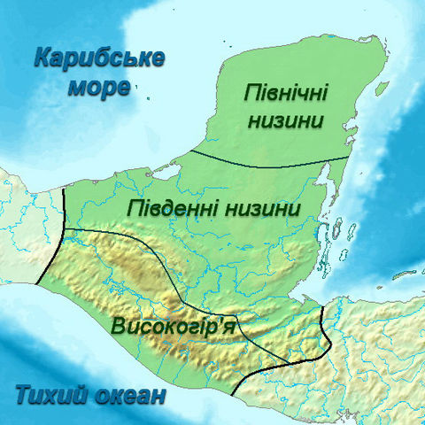
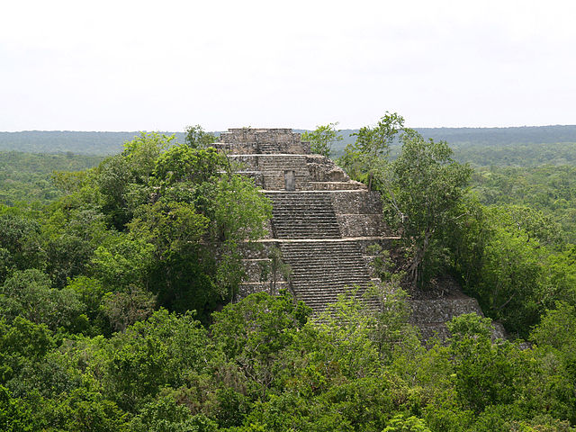
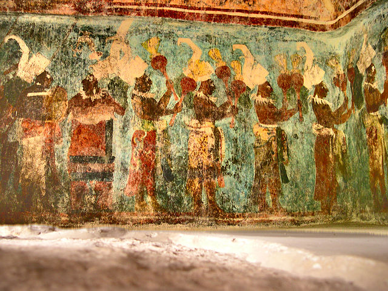
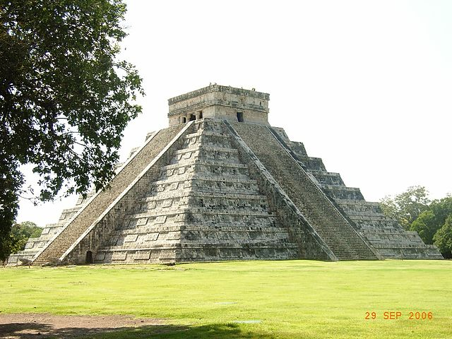
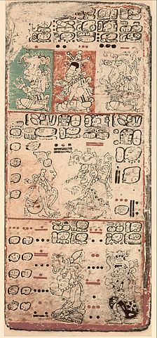

Майя, історичний та сучасний індіанський народ, який створив одну з найбільш високорозвинених цивілізацій Америки і в цілому Стародавнього світу. Деякі культурні традиції стародавніх майя зберігають близько 2,5 млн. їхніх сучасних нащадків, які представляють більше 30 етнічних груп і мовних діалектів.
Протягом 1-го та початку 2-го століття н. е. майя розселилися на величезній території, що включає в себе сучасні південні штати Мексики (Табаско, Чіапас, Кампече, Юкатан і Кінтана-Роо), нинішні країни Беліз і Гватемалу та західні райони Сальвадору і Гондурасу. Територія майя ділиться на дві великих зони: високогір'я та низинну. Низини майя включають у себе південь Мексики (штати Чіапас, Табаско, Кампече, Юкатан и Кінтана-Роо), північні департаменти Гватемали, Белізу та частину Гондурасу. За природними умовами це вапнякова низина (90 — 200 метрів над рівнем моря). Найбільші ріки течуть на заході (Усумасінта), півдні (Пасьйон) і сході (Ондо, Беліз і Мотагуа), в той час як у центрі знаходяться заболочені місцини і озера.

Розповсюдження цивілізації майя
Історія
Докласичний період
Докласичний період ще називають періодом рільництва. Досі не існує одностайної думки стосовно початку і кінця цього періоду. Приблизною датою початку цього періоду вважають 1000 р. до н. е., а кінцем 320 р. н. е. Саме в цей час з'являється мова майя, будуються великі міста. Існують археологічні докази того, що майя мігрували з одного місця в інше, зливаючись з залишками цивілізації ольмеків. У деяких місцях будівлі, скульптури, написи, тощо вказують на те, що поступово вплив ольмекської культури зменшувався і майя виробляли свою власну культуру. Однак безперечно майя багато запозичили з архітектури та скульптури ольмеків, а також культ мерців, та уяви про священні якості води й вогню. З культури ольмеків походить писемність майя, а також система чисел довгого рахунку. Власне чисто майанська культура з'явилася тільки на початку нашої ери.
З часом культура майя почала свій розвиток у районі стародавнього міста Петен, на території сучасного Гондурасу. Саме тут знаходять експонати, що вказують на розвиток рільництва, розвиненої політичної системи, релігії, розподіл праці. Пізніше хвилі мігрантів розповсюдили культуру майя на далеку відстань, до півострова Юкатан, сучасної Мексики. Цим пояснюється наявність декількох діалектів сучасної мови майя, які мають спільні корені але й деякі відмінності які виникли з перебігом часу. В 300 р. до. н. е. завдяки розвитку рільництва зростає населення і починається процес урбанізації. В цей час вже можна говорити про розвиток сільського господарства, вирощування певних культур, таких як кукурудза, і де скотарство та рибальство вже займають не основну, а допоміжну роль.
Археологічні розкопки підтверджують, що майя почали споруджувати перші церемоніальні будинки близько 3000 років тому. Майя й ольмеки взаємодоповнювали і запозичували один в одного архітектурні традиції. Першими та найстарішими спорудами були прості споруди могил — курганів, які пізніше розвинулися в більш складні піраміди. Залишки цивілізації майя докласичного періоду знаходять у мексиканському штаті Чіапас, у південній частині штату Оахака. Поступово вплив ольмекської культури зник і вплив культури майя поширився на півострів Юкатан, а також Гватемалу та інші місця.
Класичний період
Класичний період в історії цивілізації майя тривав з 320 р. н. е. до 987 р. н. е. Цей період ще називають Теократичним періодом, тому що вважалося, що суспільством майя того часу керували священики, які концентрували у своїх руках все політичне, економічне і суспільне життя. Насправді ж, згідно з археологічними знахідками священики відігравали значну роль у суспільстві майя, але не керівну. Існував клас знаті, який складався майже винятково з воїнів. Багато зображень виконаних майя вказують на те, що міста майя знаходились у стані майже перманентної війни одне з одним.
В цей період розвивається сільське господарство, як основа економічної діяльності суспільства, і в якій були зайняті великі кількості людей. Також існував розподіл праці та виразна система суспільних класів. Цивілізація майя складалася з великої кількості незалежних міст-держав, таких як Тікаль, Паленке, Копан, Калакмуль і багатьох інших. Місто Копан на території сучасного Гондурасу досягло свого розквіту в 736 р. н. е. Тут існував центр наукових досягнень майя. Вважається, що саме тут майя вдосконалили свої знання з астрономії, склали точні таблиці сонячних затемнень, винайшли формулу для створення календаря. Вважається що календар майя більш точний ніж той, що ми використовуємо зараз.

Калакмул - одне з найважливіших міст класичного періоду
Найвідоміші пам'ятки цього періоду — численні піраміди. Майя також залишили багато стел із зображеннями на них своїх правителів, з ієрогліфічними текстами про родовід правителів, війни та інші досягнення. Майя також займалися торгівлею. Існують докази того, що вони торгували з багатьма досить віддаленими від них народами Месоамерики. Важливими предметами торгівлі майя були сіль, какао, обсидіан тощо. Зокрема існують свідоцтва торговельних і культурних контактів майя з містом Теотіуакан і цивілізацією, що панувала там.
Посткласичний період
В 8-му та 9-му сторіччі починається занепад цивілізації майя. Більшість міст-держав центральних низин виявились покинутими. Між археологами не існує одностайної думки щодо причин занепаду. Деякі вважають, що безперервні війни, екологічний занепад ораних земель, а також посухи могли бути причиною того, що майя залишили ці центри свого суспільства.
Існують дві великі теорії, які пояснюють причини чому майя залишили свої міста. Одна з теорій — екологічна. Ті, хто дотримується цієї теорії вважають, що причиною занепаду цивілізації майя було погіршення становища земель, які майя використовували в рільництві. Археологічні розкопки підтверджують, що майя практикували підсічно-вогневе рільництво. Одна з гіпотез пояснювала, що причиною занепаду було виснаження ґрунтів та ерозія, в результаті чого навколишні землі вже були неспроможні прогодувати населення міст, яке постійно зрозстало. Також стверджується, що
населення міст досягло таких розмірів, що рільництво регіону було вже нездатне забезпечити життєві потреби майя.
Інша теорія пояснює занепад цивілізації майя зовнішніми причинами, такими як вторгнення іноземних загарбників, епідемії, кліматичні катаклізми. Деякі археологічні знахідки дійсно підтверджують вторгнення, наприклад тольтеків та інших, але більшість дослідників схиляються думки, що це не могло бути єдиною причиною занепаду суспільства. Також висуваються теорії занепаду суспільства у зв'язку із знищенням торговельних шляхів після падіння Теотіуакану в 700 чи 750 р. н. е., або такі як повстання селян проти еліти суспільства.
Структура суспільства і економіка
Суспільство майя мало чіткий поділ на класи знаті, священиків, воїнів, ремісників, торговців, селян (яких було більшість) і рабів. На чолі суспільства стояли верховні вожді, котрі отримували владу в спадщину від батька і делегували її вождям поселень. Соціальна структура суспільства майя була досить складна, кожний суспільний клас також ділився в залежності від майнових, статевих чи інших чинників. Селяни, які складали більшість підрозділялися на власне селян, слуг і рабів. Знать підрозділялася на воїнів, священиків, службовців і вождів. Приналежність до класу священиків теж передавалася в спадщину серед класу знаті. На нижчому щаблі суспільства знаходились раби. Рабами звичайно ставали захоплені в полон інші майя, або злочинці. Знать і нижчі класи суспільства переважно не знаходились в антагоністичному протистоянні один з одним оскільки їх поєднували родові зв'язки.
Основною сферою економічної діяльності майя було землеробство. Вони вирощували кукурудзу, бавовну, боби, перець, какао, маніоку, фрукти тощо. Вважається, що сама назва майя походить від слова "кукурудза". Майя також мали домашню худобу, приручили собаку, тримали індиків, займалися бджільництвом. Торгівля з іншими народами і племенами була досить розвинена. Торговці користувалися повагою і шаною всього суспільства, до того ж деякі з них займалися шпигунством на користь своєї колонії. Грошей як таких не існувало, функцію грошей виконували зерна какао, маленькі мідяні дзвоники, пір'я орла. Також була поширена мінова торгівля.
Культура
Мистецтво
Мистецтво майя досягло свого розквіту саме під час класичного періоду (200—900 р. н. е.). Різьблені рельєфні зображення в Паленке і Копані вважаються одними з найкращих. Витонченість і грація зображень людини на цих пам'ятках архітектури майя нагадують класичні форми Стародавньої Греції. Саме тому цей період історії майя і називають класичним. До нашого часу не дійшло багато малюнків виконаних майя. Більшість зображень — фрески і малюнки на кераміці. Бонампак — одне з місць де збереглися чудові фрески майя.

Фрески в м. Бонампак
Архітектура
Найбільш відомі своєю архітектурою міста майанської цивілізації: Чичен-Ітца, Тікаль, Ушмаль, Паленке та інші. Дослідження і розуміння спільних рис архітектури майя дуже важливо для розуміння еволюції всієї цивілізації майя. Основною рисою архітектури майя є намагання інтегрувати навколишнє середовище в дизайні міст і споруд: міста і будинки розташовані неподалік водоймищ і також у ключових місцях для астрономічних досліджень. У центрі міста як правило знаходилася піраміда, поруч з якою були розташовані інші менші піраміди, державні або релігійні споруди, площадки для гри в м'яч та інші. На думку археологів більшість міст майя не будувалося за чітким планом, а дещо хаотично впродовж сторіч. Попри це, наявні будинки знаходились у чіткому співвідношенні до небесних тіл та інших астрономічних уявлень майя. Деякі археологи стверджують, що згідно з Довгим Календарем майя, в кінці кожного 52-річного циклу храми й піраміди часто перебудовувались. Також перебудови і зміни в архітектурі міст були частково впроваджені не тільки з огляду до відповідності астрономічним вимогам, а також і політичними, наприклад новим керівництвом міст.

Піраміда майя у Чичен-Ітці, зараз відома як El Castillo
Хоча майя напевно й не мали таких технологічних та інженерних досягнень у будівництві як інші цивілізації, (наприклад, навіть залізо та колесо) будівництво споруд поширювалося завдяки великим людським ресурсам. У будівництві широко використовувалися матеріали з навколишнього середовища, каміння і дерева. Каміння для будівництва видобувалося з місцевих копалин, проте досить часто його заміняв більш придатний і легкий в обробці вапняк. Вапняк використовували не тільки великими блоками, а й дрібний чи помолотий вапняк, який у такому стані набирав якості теперішнього цементу. В деяких містах, де бракувало каміння в будівництві використовувалася глина, дерево тощо.
Писемність
Писемність майя часто називають гліфами або ієрогліфами через схожість накреслення з ієрогліфами Стародавнього Єгипту. Як і в Єгипті, писемність майя являла собою комбінацію фонетичних символів і логограм. З цієї причини її частіше за все класифікують як логографічну писемність. У цій системі знаки мовних складів відіграють важливу роль. У доколумбовому Новому Світі це була єдина система писемності, яка цілком представляла розмовну мову суспільства. Всього майанська писемність мала більш ніж тисячу різних символів, з невеликими відмінностями того чи іншого знаку або значення. Багато з них з'являються в текстах зовсім рідко або обмежені специфічними місцеположеннями. Загалом близько 500 символів було у використанні, приблизно 200, з яких (включаючи варіації), мали різне фонетичне або складове значення.
Найперші написи мовою майя датуються 200—300 роками до н. е. Проте, були знайдені ще давніші написи, виконані або сапотеками, або ольмеками. Існують написи, які вчені називають пост-ольмекськими або епі-ольмекськими, і які, на думку вчених, являють собою перехідну писемність між ольмеками і майя. На час прибуття іспанців у Новий світ, писемність майя вже використовувалася не так часто, як протягом класичного періоду. Перші іспанські завойовники ще зустрічали майя, які вміли писати і читати, та знаходили величезні бібліотеки літератури майя. Під впливом релігійних діячів католицької церкви майже вся література майя була знищена іспанськими священиками, зокрема єпископом Дієго де Ланда. З величезної кількості книжок збереглося тільки три і частина четвертої, так званих кодексів майя; з приблизно 10 тис. написів і текстів, що дійшли до нашого часу, — переважна більшість виконана на кам'яних стелах і будівлях.

Сторінка з книжки майя
Наукові досягнення
Математика
Математики майя ввели поняття нуля й оперували нескінченно великими величинами. Стародавні майя користувалися двадцятковою системою числення. Чому саме число 20 разом з одиницею стало основою їх рахунку, зараз неможливо встановити з достатньою достовірністю. Швидше за все сама людина була для стародавніх майя тією ідеальною математичною моделлю, яку сама природа "розчленувала" на 20 одиниць по числу пальців на руках і ногах. Стародавні майя прийшли до використання в математиці позиційного принципу. На відміну від європейців, їм не було у кого запозичувати цей принцип, і вони самі додумалися до нього, причому майже на ціле тисячоліття раніше Старого Світу. Запис цифрових знаків, які складали число, вони стали вести не горизонтально, а вертикально, знизу до верху. Оскільки рахунок був двадцятковим, то кожне початкове число наступної верхньої позиції, або порядку, було удвадцятеро більше свого сусіда з нижньої позиції (якби майя користувалися десятковою системою, це число було б більше не у двадцять разів, а тільки вдесятеро). На першій позиції (стрічці) стояли одиниці, на другій — двадцятки і т. д.
Майя записували свої цифрові знаки у вигляді крапок і тире, причому крапка завжди означала одиниці даного порядку, а тире — п'ятірки. П'ятірки-тире спрощували написання цифрових знаків, не вносячи яких-небудь принципових змін до двадцяткової системи рахунку. Майя не боялися порушити строгий, чіткий лад двадцяткової системи, щоб пристосувати абстрактну побудову чисел до своїх конкретних потреб. І зробили це так само просто і геніально. Математичні розрахунки із застосуванням багатозначних чисел у майя були в основному пов'язані з астрономічними обчисленнями, які лежали в основі календаря. Щоб спростити їх, майя максимально наблизили первинне число третього порядку до кількості днів свого року. Адже у вісімнадцяти двадцятиденних місяцях, складових календарного року, число днів дорівнює 360.
Система рахунку майя
Астрономія
Майя були також досвідченими астрономами. Вони займалися не тільки рахунком днів, але й створенням концепції часу. Розташування храмів і інших будівель мало для майя дуже велике значення. Як й інші народи Центральної Америки, майя надавали особливу увагу спостереженню руху небесних тіл. Нерідко досить важливі частини храмів майя, були орієнтовані таким чином, що їх положення позначало схід, кульмінацію і захід тих чи інших зірок. Особливо цікавили майя сузір'я Плеяди, а також траєкторія таких планет, як Меркурій, Венера, Марс і Юпітер. Звичайно, вони дуже уважно спостерігали за рухом Сонця і Місяця, а тому вміли передбачати затемнення.
Для розрахунків затемнень майя поєднували астрономічні спостереження і довідкові таблиці. Майя складали свої таблиці з розрахунку на 11 958 днів, що майже точно відповідає 46 рокам одного з календарів майя (46 років Тцолкін = 11 960 днів). Це повністю відповідає 405 місяцям Місяця (також 11 960 дням). Авторами таблиць були також складені доповнення, що коректують їх основні дані — це забезпечувало їх точність до одного дня протягом 4500 років, що було одним з дивовижних досягнень майя.
Релігія
Релігія домінувала майже у всіх аспектах життя народу майя. Її вплив був завжди відчутний у сільськогосподарських обрядах, суспільних церемоніях, мистецтві і культурі. Важливість релігії була дуже великою, якщо брати до уваги її тісний зв'язок з політичним контролем, ідеологією. Всі аспекти релігійного життя, щонайменш у пост-класичний період, були сконцентровані в руках окремої групи суспільства — жреців.
Майя вірили в циклічну природу часу. Ритуали й церемонії були часом дуже тісно пов'язані з небесними та земними циклами, за якими майя постійно спостерігали і вписували в окремі календарі. Робота жреця майя полягала в інтерпретації цих циклів і наданні пророцтв на майбутнє або минуле на основі цифрових співвідношень різних календарів.
Багато що з релігійної традиції майя все ще не зрозуміле, але відомо, що майя, як і більшість стародавніх суспільств, вважали, що космос має три головні рівні: підземне царство, небо і землю. Майя вірили, що в підземне царство людина потрапляє через печери й площадки для гри в м'яч. Вони вважали, що пеклом керують старі боги смерті і гниття. Нічне небо вважалося вікном, через яке можна було побачити всі надприродні явища. Життєвий цикл кукурудзи лежить в основі віри майя. Бог Маїсу, або кукурудзи, був одним із основних божеств майя. Тілесний ідеал Бога Маїсу був втілений у багатьох скульптурах, виконаних майя. Майя вважали, що всесвіт плоский, рівний і має чотири чітко визначені кути, яким відповідали певні кольори. Вони також поклонилися колу, яке символізувало вдосконаленість і рівновагу сил у природі.